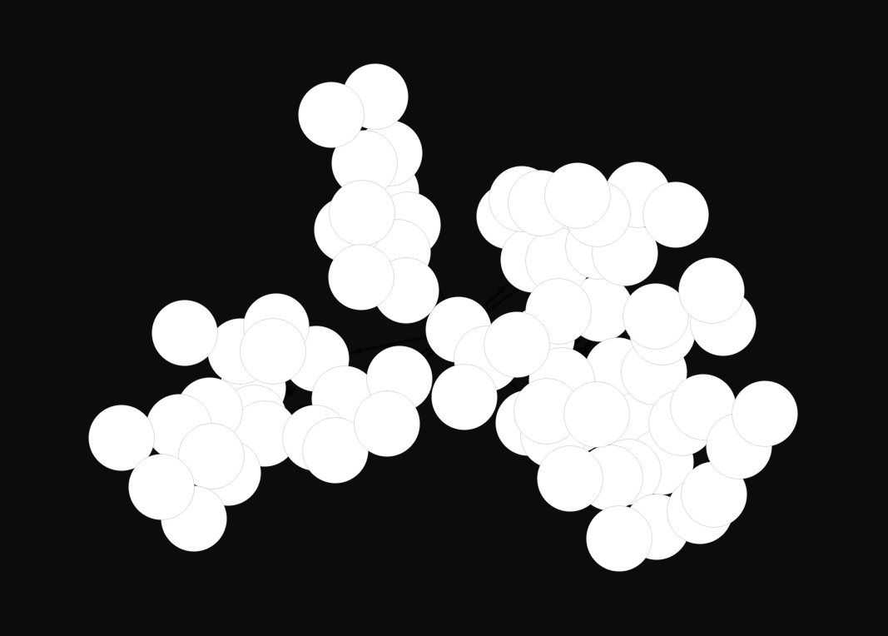

Wolfram Language
Source{{{1,2},{2,3}} → {{2,3},{2,3},{3,4},{1,3}}}
Universe 1867 Rewriting Rule
(* Wolfram Language specification *)
WolframModel[
{{{1,2},{2,3}} -> {{2,3},{2,3},{3,4},{1,3}}},
{{1,1},{1,1}}, (* initial: 2 self-loops *)
7, (* 7 generations *)
"FinalStatePlot"
]

Lean 4 Formalization
Verified-- Lean 4 formalization of Universe 1867
def rule1867 (e1 e2 : Hyperedge) (fresh : Nat) :
List Hyperedge :=
let a := e1.src
let b := e1.tgt -- = e2.src
let c := e2.tgt
[⟨b, c⟩, ⟨b, c⟩, ⟨c, fresh⟩, ⟨a, c⟩]
def initial : Hypergraph :=
[⟨1, 1⟩, ⟨1, 1⟩]
def universe1867_gen7 : Hypergraph :=
evolveFinal initial 7
Verified Theorems
theorem initial_edge_count :
edgeCount initial = 2 := rfl
theorem rule_produces_four_edges :
(applyRule e1 e2 fresh).length = 4 := rfl
theorem evolve_deterministic :
evolve g n = evolve g n := rfl